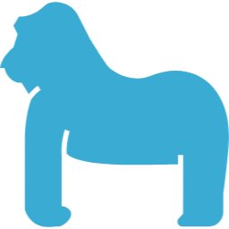

Animals that like millet dumplings
きび団子を好む動物たちの例

桃 Peach
桃がきび団子を好む理由は、自然な果糖と栄養、甘さと酸味の絶妙なバランス、果肉の食感、種子からの栄養吸収などが挙げられます。

犬 Dog
犬がきび団子を好む理由は、自然な食材の味と栄養、歯ごたえ、本能的な欲求の満足、飼い主との絆の強化が挙げられます。

猿 Monkey
猿がきび団子を好む理由は、自然な食材の多様性や風味、持ち運びやすさ、群れとの社交的な食事体験による絆の強化も挙げられます。
雉 Pheasant
雉がきび団子を好む理由は、豊富なタンパク質とエネルギー源、採食の適応、羽ばたきや歩行によるエクササイズと健康維持が挙げられます。